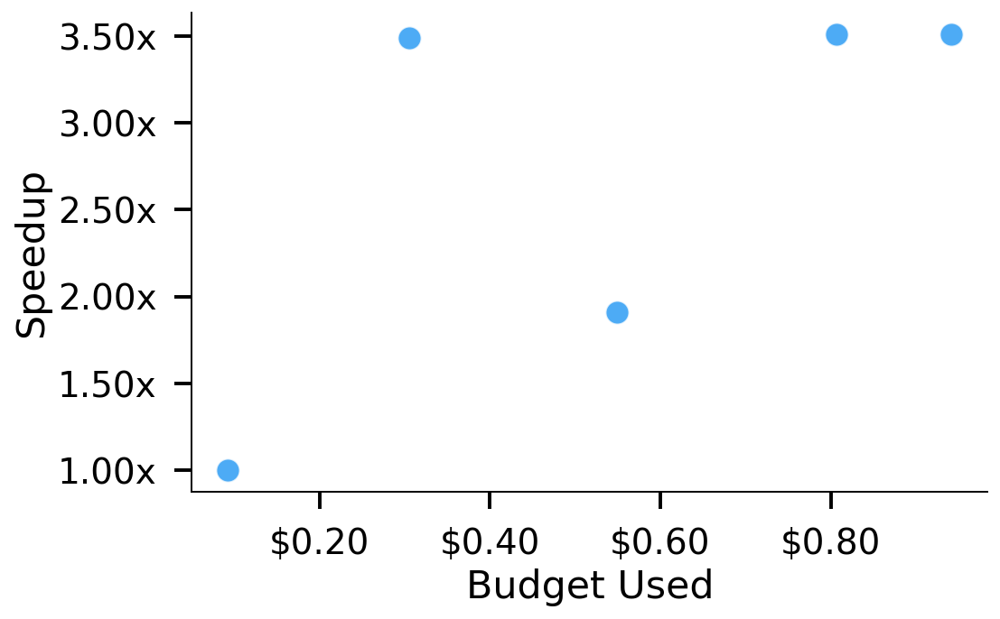
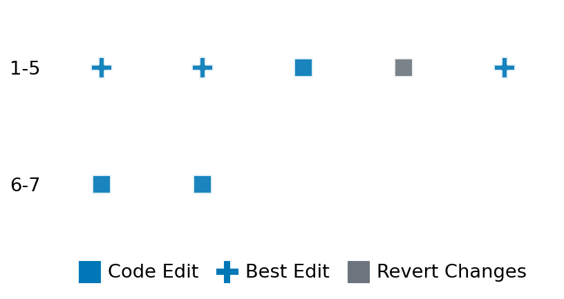

SETTING:
You're an autonomous programmer tasked with solving a specific problem. You are to use the commands defined below to accomplish this task. Every message you send incurs a cost—you will be informed of your usage and remaining budget by the system.
You will be evaluated based on the best-performing piece of code you produce, even if the final code doesn't work or compile (as long as it worked at some point and achieved a score, you will be eligible).
Apart from the default Python packages, you have access to the following additional packages:
- cryptography
- cvxpy
- cython
- dace
- dask
- diffrax
- ecos
- faiss-cpu
- hdbscan
- highspy
- jax
- networkx
- numba
- numpy
- ortools
- pandas
- pot
- psutil
- pulp
- pyomo
- python-sat
- pythran
- scikit-learn
- scipy
- sympy
- torch
YOUR TASK:
Your objective is to define a class named `Solver` in `solver.py` with a method:
```
class Solver:
def solve(self, problem, **kwargs) -> Any:
"""Your implementation goes here."""
...
```
IMPORTANT: Compilation time of your init function will not count towards your function's runtime.
This `solve` function will be the entrypoint called by the evaluation harness. Strive to align your class and method implementation as closely as possible with the desired performance criteria.
For each instance, your function can run for at most 10x the reference runtime for that instance. Strive to have your implementation run as fast as possible, while returning the same output as the reference function (for the same given input). Be creative and optimize your approach!
Your messages should include a short thought about what you should do, followed by a _SINGLE_ command. The command must be enclosed within ``` and ```, like so:
<Reasoning behind executing the command>
```
<command>
```
IMPORTANT: Each set of triple backticks (```) must always be on their own line, without any other words or anything else on that line.
Here are the commands available to you. Ensure you include one and only one of the following commands in each of your responses:
- `edit`: Replace a range of lines with new content in a file. This is how you can create files: if the file does not exist, it will be created. Here is an example:
```
edit
file: <file_name>
lines: <start_line>-<end_line>
---
<new_content>
---
```
The command will:
1. Delete the lines from <start_line> to <end_line> (inclusive)
2. Insert <new_content> starting at <start_line>
3. If both <start_line> and <end_line> are 0, <new_content> will be prepended to the file
Example:
edit
file: solver.py
lines: 5-7
---
def improved_function():
print("Optimized solution")
---
- `ls`: List all files in the current working directory.
- `view_file <file_name> [start_line]`: Display 100 lines of `<file_name>` starting from `start_line` (defaults to line 1).
- `revert`: Revert the code to the best-performing version thus far.
- `reference <string>`: Query the reference solver with a problem and receive its solution. If the problem's input is a list, this command would look like:
```
reference [1,2,3,4]
```
- `eval_input <string>`: Run your current solver implementation on the given input. This is the only command that shows stdout from your solver along with both solutions. Example:
```
eval_input [1,2,3,4]
```
- `eval`: Run evaluation on the current solution and report the results.
- `delete`: Delete a range of lines from a file using the format:
```
delete
file: <file_name>
lines: <start_line>-<end_line>
The command will delete the lines from <start_line> to <end_line> (inclusive)
Example:
delete
file: solver.py
lines: 5-10
```
- `profile <filename.py> <input>`: Profile your currently loaded solve method's performance on a given input. Shows the 25 most time-consuming lines. Requires specifying a python file (e.g., `solver.py`) for validation, though profiling runs on the current in-memory code.
Example:
```
profile solver.py [1, 2, 3]
```
- `profile_lines <filename.py> <line_number1, line_number2, ...> <input>`: Profiles the chosen lines of the currently loaded code on the given input. Requires specifying a python file for validation.
Example:
```
profile_lines solver.py 1,2,3 [1, 2, 3]
```
**TIPS:**
After each edit, a linter will automatically run to ensure code quality. If there are critical linter errors, your changes will not be applied, and you will receive the linter's error message. Typically, linter errors arise from issues like improper indentation—ensure your edits maintain proper code formatting.
**Cython Compilation:** Edits creating or modifying Cython (`.pyx`) files will automatically trigger a compilation attempt (requires a `setup.py`). You will be notified if compilation succeeds or fails. If it fails, the edit to the `.pyx` file will be automatically reverted.
If the code runs successfully without errors, the in-memory 'last known good code' will be updated to the new version. Following successful edits, you will receive a summary of your `solve` function's performance compared to the reference.
If you get stuck, try reverting your code and restarting your train of thought.
Do not put an if __name__ == "__main__": block in your code, as it will not be ran (only the solve function will).
Keep trying to better your code until you run out of money. Do not stop beforehand!
**GOALS:**
Your primary objective is to optimize the `solve` function to run as as fast as possible, while returning the optimal solution.
You will receive better scores the quicker your solution runs, and you will be penalized for exceeding the time limit or returning non-optimal solutions.
Below you find the description of the task you will have to solve. Read it carefully and understand what the problem is and what your solver should do.
**TASK DESCRIPTION:**
GeneralizedEigenvaluesComplex Task:
Given two matrices A and B, where:
- A and B are arbitrary real n x n matrices,
the task is to solve the generalized eigenvalue problem:
A · x = λ B · x
The eigenvalues are not necessarily real; they may be complex.
The goal is to compute the approximated eigenvalues and return them sorted in descending order.
The sorting order is defined as follows: first by the real part (in descending order), then by the imaginary part (in descending order).
A valid solution is a list of n numbers (complex or real) sorted according to this ordering.
Input: Two matrices A and B represented as a list of n lists of real numbers each.
- A and B are arbitrary (not necessarily symmetric).
Example input:
A = [
[1.0, 2.0],
[3.0, 4.0]
]
B = [
[2.0, 0.5],
[1.5, 3.0]
]
Output: A list of approximated eigenvalues (which may be complex) sorted in descending order.
Example output:
[(5.2+0.3j), (0.8-0.3j)]
Category: matrix_operations
Below is the reference implementation. Your function should run much quicker.
import random
import numpy as np
import scipy.linalg as la
from numpy.typing import NDArray
| 01: def solve(self, problem: tuple[NDArray, NDArray]) -> list[complex]:
| 02: """
| 03: Solve the generalized eigenvalue problem for the given matrices A and B.
| 04:
| 05: The problem is defined as: A · x = λ B · x.
| 06: For better numerical stability, we first scale B, then solve the problem.
| 07:
| 08: The solution is a list of eigenvalues sorted in descending order, where the sorting order
| 09: is defined as: first by the real part (descending), then by the imaginary part (descending).
| 10:
| 11: :param problem: Tuple (A, B) where A and B are n x n real matrices.
| 12: :return: List of eigenvalues (complex numbers) sorted in descending order.
| 13:
| 14:
| 15: NOTE: Your solution must pass validation by:
| 16: 1. Returning correctly formatted output
| 17: 2. Having no NaN or infinity values
| 18: 3. Matching expected results within numerical tolerance
| 19: """
| 20: A, B = problem
| 21:
| 22: # Scale matrices for better numerical stability.
| 23: scale_B = np.sqrt(np.linalg.norm(B))
| 24: B_scaled = B / scale_B
| 25: A_scaled = A / scale_B
| 26:
| 27: # Solve scaled problem.
| 28: eigenvalues, _ = la.eig(A_scaled, B_scaled)
| 29:
| 30: # Sort eigenvalues: descending order by real part, then by imaginary part.
| 31: solution = sorted(eigenvalues, key=lambda x: (-x.real, -x.imag))
| 32: return solution
| 33:
This function will be used to check if your solution is valid for a given problem. If it returns False, it means the solution is invalid:
import random
import numpy as np
import scipy.linalg as la
from numpy.typing import NDArray
| 01: def is_solution( problem: tuple[NDArray, NDArray], solution: list[complex]) -> bool:
| 02: """
| 03: Check if the generalized eigenvalue solution is valid and optimal.
| 04:
| 05: Checks performed:
| 06: 1. The solution is a list of complex numbers with length n.
| 07: 2. Each eigenvalue is finite.
| 08: 3. Eigenvalues are sorted in descending order by re-sorting with the same key
| 09: and confirming they match the user-provided list.
| 10: 4. For each eigenvalue λ, check that (A - λ B) is nearly singular. We compute the
| 11: smallest singular value of (A - λ B). The relative error is:
| 12: min_sigma / (||A|| + ||B|| + ε),
| 13: which must be below a specified tolerance.
| 14:
| 15: :param problem: Tuple (A, B) where A and B are n x n real matrices.
| 16: :param solution: List of eigenvalues (complex numbers) purportedly sorted in descending order.
| 17: :return: True if the solution is valid and optimal; otherwise, False.
| 18: """
| 19: A, B = problem
| 20: n = A.shape[0]
| 21: tol = 1e-6
| 22: epsilon = 1e-12
| 23:
| 24: # 1. Check that solution is a list of length n.
| 25: if not isinstance(solution, list):
| 26: logging.error("Solution is not a list.")
| 27: return False
| 28: if len(solution) != n:
| 29: logging.error(f"Solution length {len(solution)} does not match expected size {n}.")
| 30: return False
| 31:
| 32: # 2. Check that each eigenvalue is a finite complex number.
| 33: for i, eig in enumerate(solution):
| 34: try:
| 35: lam = complex(eig)
| 36: except Exception as e:
| 37: logging.error(f"Eigenvalue at index {i} cannot be converted to complex: {e}")
| 38: return False
| 39: if not (np.isfinite(lam.real) and np.isfinite(lam.imag)):
| 40: logging.error(f"Eigenvalue at index {i} is not finite: {lam}")
| 41: return False
| 42:
| 43: # 3. Verify the user-provided list is sorted in descending order
| 44: # by re-sorting with the exact same key.
| 45: sorted_solution = sorted(solution, key=lambda x: (-x.real, -x.imag))
| 46:
| 47: # Compare element by element to ensure they match (within a small tolerance).
| 48: for cand, sorted_val in zip(solution, sorted_solution):
| 49: # If they differ significantly, the user's solution isn't sorted properly.
| 50: if abs(cand - sorted_val) > 1e-12:
| 51: logging.error("Eigenvalues are not sorted in descending order.")
| 52: return False
| 53:
| 54: # 4. For each eigenvalue, check if A - λ B is nearly singular.
| 55: norm_A = np.linalg.norm(A)
| 56: norm_B = np.linalg.norm(B)
| 57:
| 58: for i, lam in enumerate(solution):
| 59: residual_matrix = A - lam * B
| 60: # Compute smallest singular value of (A - λ B).
| 61: try:
| 62: singular_values = np.linalg.svd(residual_matrix, compute_uv=False)
| 63: except Exception as e:
| 64: logging.error(f"Error computing SVD for eigenvalue index {i}: {e}")
| 65: return False
| 66: min_sv = np.min(np.abs(singular_values))
| 67:
| 68: # If (A - λ B) is truly singular, min_sv should be near zero.
| 69: rel_error = min_sv / (norm_A + norm_B + epsilon)
| 70: if rel_error > tol:
| 71: logging.error(
| 72: f"Eigenvalue at index {i} has relative residual error {rel_error} "
| 73: f"which exceeds tolerance {tol}."
| 74: )
| 75: return False
| 76:
| 77: return True
| 78:
 AlgoTuner Trajectory
AlgoTuner Trajectory
AlgoTune Task:
generalized_eigenvalues_complex
Model:
Claude Opus 4
Speedup
3.490x
Total Budget
$1.00
Initial System Prompt
AlgoTune Task Description
GeneralizedEigenvaluesComplex Task:
Given two matrices A and B, where:
- A and B are arbitrary real n x n matrices,
the task is to solve the generalized eigenvalue problem:
A · x = λ B · x
The eigenvalues are not necessarily real; they may be complex.
The goal is to compute the approximated eigenvalues and return them sorted in descending order.
The sorting order is defined as follows: first by the real part (in descending order), then by the imaginary part (in descending order).
A valid solution is a list of n numbers (complex or real) sorted according to this ordering.
Input: Two matrices A and B represented as a list of n lists of real numbers each.
- A and B are arbitrary (not necessarily symmetric).
Example input:
A = [
[1.0, 2.0],
[3.0, 4.0]
]
B = [
[2.0, 0.5],
[1.5, 3.0]
]
Output: A list of approximated eigenvalues (which may be complex) sorted in descending order.
Example output:
[(5.2+0.3j), (0.8-0.3j)]
Category: matrix_operations
Reference Implementation
import random
import numpy as np
import scipy.linalg as la
from numpy.typing import NDArray
def solve(self, problem: tuple[NDArray, NDArray]) -> list[complex]:
"""
Solve the generalized eigenvalue problem for the given matrices A and B.
The problem is defined as: A · x = λ B · x.
For better numerical stability, we first scale B, then solve the problem.
The solution is a list of eigenvalues sorted in descending order, where the sorting order
is defined as: first by the real part (descending), then by the imaginary part (descending).
:param problem: Tuple (A, B) where A and B are n x n real matrices.
:return: List of eigenvalues (complex numbers) sorted in descending order.
NOTE: Your solution must pass validation by:
1. Returning correctly formatted output
2. Having no NaN or infinity values
3. Matching expected results within numerical tolerance
"""
A, B = problem
# Scale matrices for better numerical stability.
scale_B = np.sqrt(np.linalg.norm(B))
B_scaled = B / scale_B
A_scaled = A / scale_B
# Solve scaled problem.
eigenvalues, _ = la.eig(A_scaled, B_scaled)
# Sort eigenvalues: descending order by real part, then by imaginary part.
solution = sorted(eigenvalues, key=lambda x: (-x.real, -x.imag))
return solutionBest AlgoTuner-Generated Code
solver.py
import numpy as np
import numba as nb
@nb.njit
def compute_frobenius_norm_squared(B):
"""Compute Frobenius norm squared using numba for speed."""
n = B.shape[0]
sum_sq = 0.0
for i in range(n):
for j in range(n):
sum_sq += B[i, j] * B[i, j]
return sum_sq
class Solver:
def __init__(self):
# Warm up numba
dummy = np.array([[1.0, 2.0], [3.0, 4.0]])
compute_frobenius_norm_squared(dummy)
def solve(self, problem):
"""
Solve the generalized eigenvalue problem for the given matrices A and B.
"""
A, B = problem
# Scale matrices for better numerical stability
# Use numba-compiled Frobenius norm
scale_B = np.sqrt(compute_frobenius_norm_squared(B))
B_scaled = B / scale_B
A_scaled = A / scale_B
# Solve scaled problem using numpy's eig
eigenvalues = np.linalg.eigvals(A_scaled @ np.linalg.inv(B_scaled))
# Sort eigenvalues: descending order by real part, then by imaginary part
idx = np.lexsort((-eigenvalues.imag, -eigenvalues.real))
return eigenvalues[idx].tolist()Speedup vs Budget Plot
Speedup vs Budget

Action Sequence
